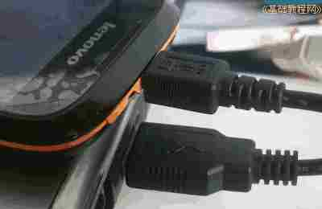
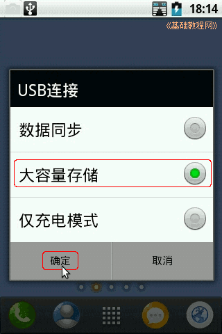
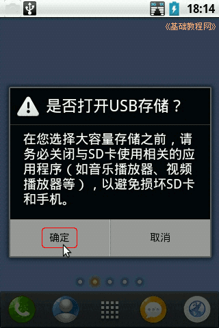
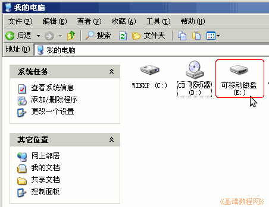
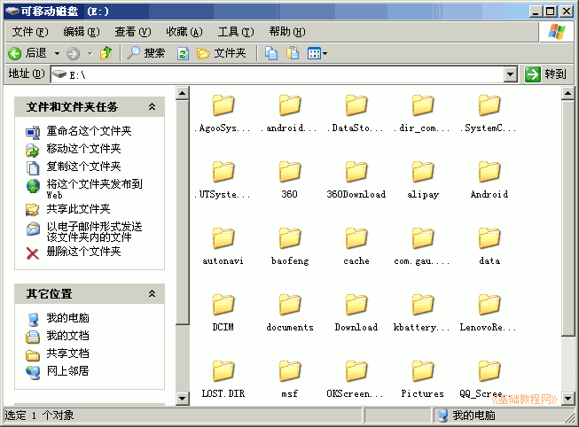
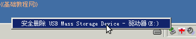
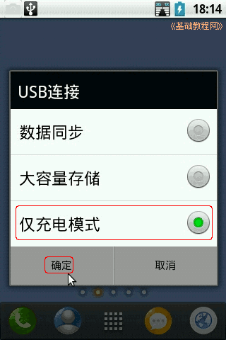

Android 安卓智能手机操作教程
作者：TeliuTe 来源：基础教程网
十二、连接电脑 返回目录 下一课本节学习手机连接电脑，作为一个U盘可移动存储设备，；
1、连接电脑
1）使用手机自带的数据线，将手机连接到电脑的USB接口上；

2）手机屏幕上会弹出USB模式选择菜单，选择“大容量存储”，然后点确定；

3）注意此时要关闭手机上正在播放的音乐或视频等打开的程序，然后在确认对话框里也点“确定”；

4）这时电脑上会出现发现新硬件的提示，稍等提示“已经可以使用”，打开“我的电脑”或计算机，里面有个可移动磁盘；

5）打开可移动磁盘，里面就是手机存储卡上的内容，可以把文件拷入磁盘，也可以把里面的文件拷贝出来，就跟使用U盘一样；

6）使用完以后，在电脑上关闭文件夹，在右下角弹出可移动磁盘；

7）在手机上下拉通知栏，将USB模式改为“仅充电模式”，点确定就可以断开连线了；

本节学习了手机连接电脑的基础知识，如果你成功地完成了练习，请继续学习下一课内容；
本教程由86团学校TeliuTe制作|著作权所有
基础教程网：http://teliute.org/
美丽的校园……
转载和引用本站内容，请保留作者和本站链接。